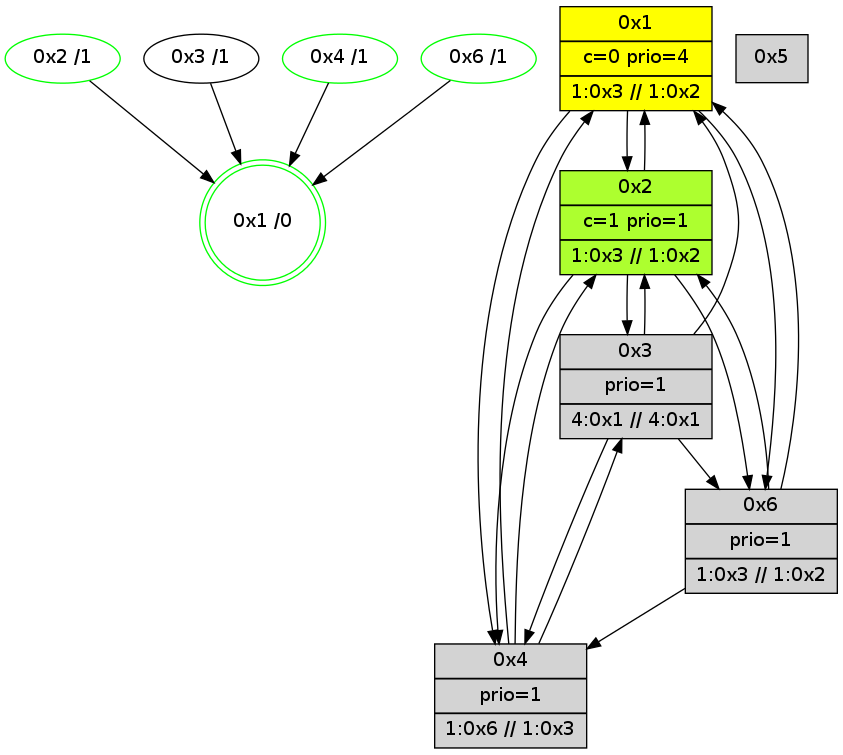

>> << IDX [start] -100 -25 -5 +0 +5 +25 +100 [810.159671068]
 Previous packets
----------------------------------------------------------------------
805.238585 beacon01(adaf) #0 coord=01,02,05,03,04,06 cycle=432.0ms assoc
-- color-indic=1 64 fc 30
805.248545 beacon02(adaf) #0 coord=01,02,05,03,04,06 cycle=432.0ms assoc 64 ad cf
805.258546 beacon05(adaf) #0 coord=01,02,05,03,04,06 cycle=432.0ms assoc 64 0b e5
805.268547 beacon03(adaf) #0 coord=01,02,05,03,04,06 cycle=432.0ms assoc 64 97 c1
805.278547 beacon04(adaf) #0 coord=01,02,05,03,04,06 cycle=432.0ms assoc 64 31 eb
805.288547 beacon06(adaf) #0 coord=01,02,05,03,04,06 cycle=432.0ms assoc 64 45 f7
805.300245 [Hello(3): seq=607 sym=2,4,1,6 sysInfo=hasWarning stat=2:6,9,3,1/4:4,7,1,1/1:12,3,1,1/6:14,5,13,10]
805.302921 [Hello(4): seq=609 sym=2,1,3 sysInfo=hasWarning,coloring-mode-on,ColoringModeIndicationCalled stat=2:6,9,2,1/1:14,3,6,1/3:4,0,1,1]
805.305732 [Hello(6): seq=522 sym=4,1,2 sysInfo=hasWarning,coloring-mode-on,ColoringModeIndicationCalled stat=4:4,6,2,1/1:3,13,7,1/2:8,11,8,3]
805.307688 [Color(4) seq=35 @0:0 prio=1 >1.@6 >>1.@3,1.@4,1.@6 c=0,1]
805.314237 [Hello(1): seq=508 sym=2,3,4,6 sysInfo=hasWarning,coloring-mode-on,ColoringModeRequestCalled stat=2:15,9,8,3/3:1,0,1,1/4:8,3,7,1/6:7,5,7,0]
----------------------------------------------------------------------
805.730693 beacon01(adaf) #0 coord=01,02,05,03,04,06 cycle=432.0ms assoc
-- color-indic=1 64 38 5f
805.740654 beacon02(adaf) #0 coord=01,02,05,03,04,06 cycle=432.0ms assoc 64 69 a0
805.750653 beacon05(adaf) #0 coord=01,02,05,03,04,06 cycle=432.0ms assoc 64 cf 8a
805.760667 beacon03(adaf) #0 coord=01,02,05,03,04,06 cycle=432.0ms assoc 64 53 ae
805.770654 beacon04(adaf) #0 coord=01,02,05,03,04,06 cycle=432.0ms assoc 64 f5 84
805.780655 beacon06(adaf) #0 coord=01,02,05,03,04,06 cycle=432.0ms assoc 64 81 98
805.793037 [Color(6) seq=35 @0:0 prio=1 >1.@3 >>1.@2,1.@3,1.@4 c=0,1]
805.795013 [Hello(2): seq=1099 sym=6,4,1,3 sysInfo=coloring-mode-on,ColoringModeIndicationCalled stat=6:7,2,7,3/4:6,8,1,1/1:15,2,5,1/3:2,0,1,0]
805.798146 [Color(2) seq=35 @0:0 color=1 prio=1 >1.@3,1.@4,1.@6 >>1.@2,1.@3,1.@6 c=0]
805.806216 [Color(1) seq=36 @0:0 color=0 prio=4 >1.@3,1.@6 >>1.@2,1.@3,1.@4 c=1]
----------------------------------------------------------------------
806.222803 beacon01(adaf) #0 coord=01,02,05,03,04,06 cycle=432.0ms assoc
-- color-indic=1 64 74 ef
806.232764 beacon02(adaf) #0 coord=01,02,05,03,04,06 cycle=432.0ms assoc 64 25 10
806.242764 beacon05(adaf) #0 coord=01,02,05,03,04,06 cycle=432.0ms assoc 64 83 3a
806.252764 beacon03(adaf) #0 coord=01,02,05,03,04,06 cycle=432.0ms assoc 64 1f 1e
806.262765 beacon04(adaf) #0 coord=01,02,05,03,04,06 cycle=432.0ms assoc 64 b9 34
806.272765 beacon06(adaf) #0 coord=01,02,05,03,04,06 cycle=432.0ms assoc 64 cd 28
806.284467 [Hello(3): seq=608 sym=2,4,1,6 sysInfo=hasWarning stat=2:7,10,3,1/4:5,8,1,1/1:13,4,1,1/6:15,5,13,10]
806.287135 [Hello(4): seq=610 sym=2,1,3 sysInfo=hasWarning,coloring-mode-on,ColoringModeIndicationCalled stat=2:7,10,2,1/1:15,4,6,1/3:5,0,1,1]
806.289825 [Hello(1): seq=509 sym=2,3,4,6 sysInfo=hasWarning,coloring-mode-on,ColoringModeRequestCalled stat=2:15,9,8,3/3:1,0,1,1/4:8,3,7,1/6:7,5,7,0]
806.291901 [Color(4) seq=36 @0:0 prio=1 >1.@6 >>1.@3,1.@4,1.@6 c=0,1]
806.293587 [STC(1) #0.68 new-neigh,tree-change,inconsistent-stability,stable,to-color d=0]
----------------------------------------------------------------------
806.714913 beacon01(adaf) #0 coord=01,02,05,03,04,06 cycle=432.0ms assoc
-- color-indic=1 64 b0 80
806.724874 beacon02(adaf) #0 coord=01,02,05,03,04,06 cycle=432.0ms assoc 64 e1 7f
806.734874 beacon05(adaf) #0 coord=01,02,05,03,04,06 cycle=432.0ms assoc 64 47 55
806.744873 beacon03(adaf) #0 coord=01,02,05,03,04,06 cycle=432.0ms assoc 64 db 71
806.754874 beacon04(adaf) #0 coord=01,02,05,03,04,06 cycle=432.0ms assoc 64 7d 5b
806.764874 beacon06(adaf) #0 coord=01,02,05,03,04,06 cycle=432.0ms assoc 64 09 47
806.776427 [STC(3)->1 #0.68 new-neigh,tree-change,inconsistent-stability,to-color d=1]
806.778518 [Hello(2): seq=1100 sym=6,4,1,3 sysInfo=coloring-mode-on,ColoringModeIndicationCalled stat=6:7,2,7,3/4:7,9,1,1/1:0,3,6,1/3:2,0,1,0]
806.781110 [Color(6) seq=36 @0:0 prio=1 >1.@3 >>1.@2,1.@3,1.@4 c=0,1]
806.783376 [STC(2)->1 #0.68 new-neigh,tree-change,inconsistent-stability,stable,to-color d=1]
806.784656 [Color(1) seq=37 @0:0 color=0 prio=4 >1.@3,1.@6 >>1.@2,1.@3,1.@4 c=1]
806.787621 [Color(2) seq=36 @0:0 color=1 prio=1 >1.@3,1.@4,1.@6 >>1.@2,1.@3,1.@6 c=0]
806.791421 [STC(4)->1 #0.68 new-neigh,tree-change,inconsistent-stability,stable,to-color d=1]
----------------------------------------------------------------------
807.207020 beacon01(adaf) #0 coord=01,02,05,03,04,06 cycle=432.0ms assoc
-- color-indic=1 64 fd 87
807.216981 beacon02(adaf) #0 coord=01,02,05,03,04,06 cycle=432.0ms assoc 64 ac 78
807.226981 beacon05(adaf) #0 coord=01,02,05,03,04,06 cycle=432.0ms assoc 64 0a 52
807.236982 beacon03(adaf) #0 coord=01,02,05,03,04,06 cycle=432.0ms assoc 64 96 76
807.246984 beacon04(adaf) #0 coord=01,02,05,03,04,06 cycle=432.0ms assoc 64 30 5c
807.256982 beacon06(adaf) #0 coord=01,02,05,03,04,06 cycle=432.0ms assoc 64 44 40
807.271362 [Hello(4): seq=611 sym=2,1,3 sysInfo=hasWarning,coloring-mode-on,ColoringModeIndicationCalled stat=2:7,10,2,1/1:15,4,7,1/3:6,0,1,1]
807.274395 [Color(4) seq=37 @0:0 prio=1 >1.@6 >>1.@3,1.@4,1.@6 c=0,1]
807.277411 [Hello(1): seq=510 sym=2,3,4,6 sysInfo=hasWarning,coloring-mode-on,ColoringModeRequestCalled stat=2:15,10,8,3/3:1,0,1,1/4:8,3,8,1/6:7,5,7,0]
----------------------------------------------------------------------
807.699131 beacon01(adaf) #0 coord=01,02,05,03,04,06 cycle=432.0ms assoc
-- color-indic=1 64 39 e8
807.709091 beacon02(adaf) #0 coord=01,02,05,03,04,06 cycle=432.0ms assoc 64 68 17
807.719092 beacon05(adaf) #0 coord=01,02,05,03,04,06 cycle=432.0ms assoc 64 ce 3d
807.729091 beacon03(adaf) #0 coord=01,02,05,03,04,06 cycle=432.0ms assoc 64 52 19
807.739092 beacon04(adaf) #0 coord=01,02,05,03,04,06 cycle=432.0ms assoc 64 f4 33
807.749093 beacon06(adaf) #0 coord=01,02,05,03,04,06 cycle=432.0ms assoc 64 80 2f
807.761450 [Color(6) seq=37 @0:0 prio=1 >1.@3 >>1.@2,1.@3,1.@4 c=0,1]
807.763418 [Hello(2): seq=1101 sym=6,4,1,3 sysInfo=coloring-mode-on,ColoringModeIndicationCalled stat=6:8,2,7,3/4:8,10,2,1/1:1,4,6,1/3:2,0,2,0]
807.766551 [Color(2) seq=37 @0:0 color=1 prio=1 >1.@3,1.@4,1.@6 >>1.@2,1.@3,1.@6 c=0]
807.774580 [Color(1) seq=38 @0:0 color=0 prio=4 >1.@3,1.@6 >>1.@2,1.@3,1.@4 c=1]
----------------------------------------------------------------------
808.191238 beacon01(adaf) #0 coord=01,02,05,03,04,06 cycle=432.0ms assoc
-- color-indic=1 64 75 58
808.201199 beacon02(adaf) #0 coord=01,02,05,03,04,06 cycle=432.0ms assoc 64 24 a7
808.211198 beacon05(adaf) #0 coord=01,02,05,03,04,06 cycle=432.0ms assoc 64 82 8d
808.221199 beacon03(adaf) #0 coord=01,02,05,03,04,06 cycle=432.0ms assoc 64 1e a9
808.231199 beacon04(adaf) #0 coord=01,02,05,03,04,06 cycle=432.0ms assoc 64 b8 83
808.241200 beacon06(adaf) #0 coord=01,02,05,03,04,06 cycle=432.0ms assoc 64 cc 9f
808.252109 [Hello(1): seq=511 sym=2,4,6 sysInfo=hasWarning,coloring-mode-on,ColoringModeRequestCalled stat=2:15,10,8,3/4:8,3,8,1/6:7,5,7,0]
808.254647 [Hello(4): seq=612 sym=2,1,3 sysInfo=hasWarning,coloring-mode-on,ColoringModeIndicationCalled stat=2:8,11,2,1/1:0,5,7,1/3:7,0,1,1]
808.256544 [Hello(3): seq=610 sym=2,4,1,6 sysInfo=hasWarning stat=2:8,12,4,1/4:7,10,2,1/1:15,6,2,1/6:15,6,14,10]
808.259397 [Color(4) seq=38 @0:0 prio=1 >1.@6 >>1.@3,1.@4,1.@6 c=0,1]
----------------------------------------------------------------------
808.683347 beacon01(adaf) #0 coord=01,02,05,03,04,06 cycle=432.0ms assoc
-- color-indic=1 64 b1 37
808.693307 beacon02(adaf) #0 coord=01,02,05,03,04,06 cycle=432.0ms assoc 64 e0 c8
808.703308 beacon05(adaf) #0 coord=01,02,05,03,04,06 cycle=432.0ms assoc 64 46 e2
808.713307 beacon03(adaf) #0 coord=01,02,05,03,04,06 cycle=432.0ms assoc 64 da c6
808.723309 beacon04(adaf) #0 coord=01,02,05,03,04,06 cycle=432.0ms assoc 64 7c ec
808.733309 beacon06(adaf) #0 coord=01,02,05,03,04,06 cycle=432.0ms assoc 64 08 f0
808.745138 [STC(1) #0.69 new-neigh,tree-change,inconsistent-stability,stable,to-color d=0]
808.747230 [Hello(2): seq=1102 sym=6,4,1,3 sysInfo=coloring-mode-on,ColoringModeIndicationCalled stat=6:8,2,7,3/4:9,11,2,1/1:2,5,6,1/3:2,0,2,0]
808.749326 [Color(6) seq=38 @0:0 prio=1 >1.@3 >>1.@2,1.@3,1.@4 c=0,1]
808.752112 [Color(2) seq=38 @0:0 color=1 prio=1 >1.@3,1.@4,1.@6 >>1.@2,1.@3,1.@6 c=0]
808.759179 [Color(1) seq=39 @0:0 color=0 prio=4 >1.@3,1.@6 >>1.@2,1.@3,1.@4 c=1]
----------------------------------------------------------------------
809.175456 beacon01(adaf) #0 coord=01,02,05,03,04,06 cycle=432.0ms assoc
-- color-indic=1 64 ef 56
809.185417 beacon02(adaf) #0 coord=01,02,05,03,04,06 cycle=432.0ms assoc 64 be a9
809.195417 beacon05(adaf) #0 coord=01,02,05,03,04,06 cycle=432.0ms assoc 64 18 83
809.205418 beacon03(adaf) #0 coord=01,02,05,03,04,06 cycle=432.0ms assoc 64 84 a7
809.215417 beacon04(adaf) #0 coord=01,02,05,03,04,06 cycle=432.0ms assoc 64 22 8d
809.225418 beacon06(adaf) #0 coord=01,02,05,03,04,06 cycle=432.0ms assoc 64 56 91
809.237153 [Hello(6): seq=526 sym=4,1,2 sysInfo=hasWarning,coloring-mode-on,ColoringModeIndicationCalled stat=4:6,10,3,1/1:6,1,8,1/2:10,15,9,3]
809.239729 [Hello(4): seq=613 sym=2,1,3 sysInfo=hasWarning,coloring-mode-on,ColoringModeIndicationCalled stat=2:9,12,2,1/1:1,6,8,1/3:7,0,1,1]
809.242685 [STC(2)->1 #0.69 new-neigh,tree-change,inconsistent-stability,stable,to-color d=1]
809.245270 [TreeStatus(2)-.->1 #0.69 new-neigh,tree-change,inconsistent-stability,stable child=1]
809.246644 [STC(3)->1 #0.69 new-neigh,tree-change,inconsistent-stability,to-color d=1]
809.248135 [STC(4)->1 #0.69 new-neigh,tree-change,inconsistent-stability,stable,to-color d=1]
809.250431 [Color(4) seq=39 @0:0 prio=1 >1.@6 >>1.@3,1.@4,1.@6 c=0,1]
809.256505 [Hello(1): seq=512 sym=2,4,6 sysInfo=hasWarning,coloring-mode-on,ColoringModeRequestCalled stat=2:15,10,8,3/4:9,4,8,1/6:8,5,7,0]
----------------------------------------------------------------------
809.667564 beacon01(adaf) #0 coord=01,02,05,03,04,06 cycle=432.0ms assoc
-- color-indic=1 64 2b 39
809.677525 beacon02(adaf) #0 coord=01,02,05,03,04,06 cycle=432.0ms assoc 64 7a c6
809.687524 beacon05(adaf) #0 coord=01,02,05,03,04,06 cycle=432.0ms assoc 64 dc ec
809.697525 beacon03(adaf) #0 coord=01,02,05,03,04,06 cycle=432.0ms assoc 64 40 c8
809.707525 beacon04(adaf) #0 coord=01,02,05,03,04,06 cycle=432.0ms assoc 64 e6 e2
809.717525 beacon06(adaf) #0 coord=01,02,05,03,04,06 cycle=432.0ms assoc 64 92 fe
809.729888 [Color(6) seq=39 @0:0 prio=1 >1.@3 >>1.@2,1.@3,1.@4 c=0,1]
809.731871 [Hello(2): seq=1103 sym=6,4,1,3 sysInfo=coloring-mode-on,ColoringModeIndicationCalled stat=6:8,2,7,3/4:9,12,3,1/1:3,6,7,1/3:2,0,3,0]
809.735005 [Color(2) seq=39 @0:0 color=1 prio=1 >1.@3,1.@4,1.@6 >>1.@2,1.@3,1.@6 c=0]
809.740518 [Color(1) seq=40 @0:0 color=0 prio=4 >1.@3,1.@6 >>1.@2,1.@3,1.@4 c=1]